1. Chassis assembly
Parts
- 16 M4 Nuts
- 4 M4x12 Countersunk Head
- 4 M5 square
- 4 M5x120
- 8 M2x12
- 4 M5x25 HEX
- 1 Motherboard
Tools
Step 1: Insert nuts
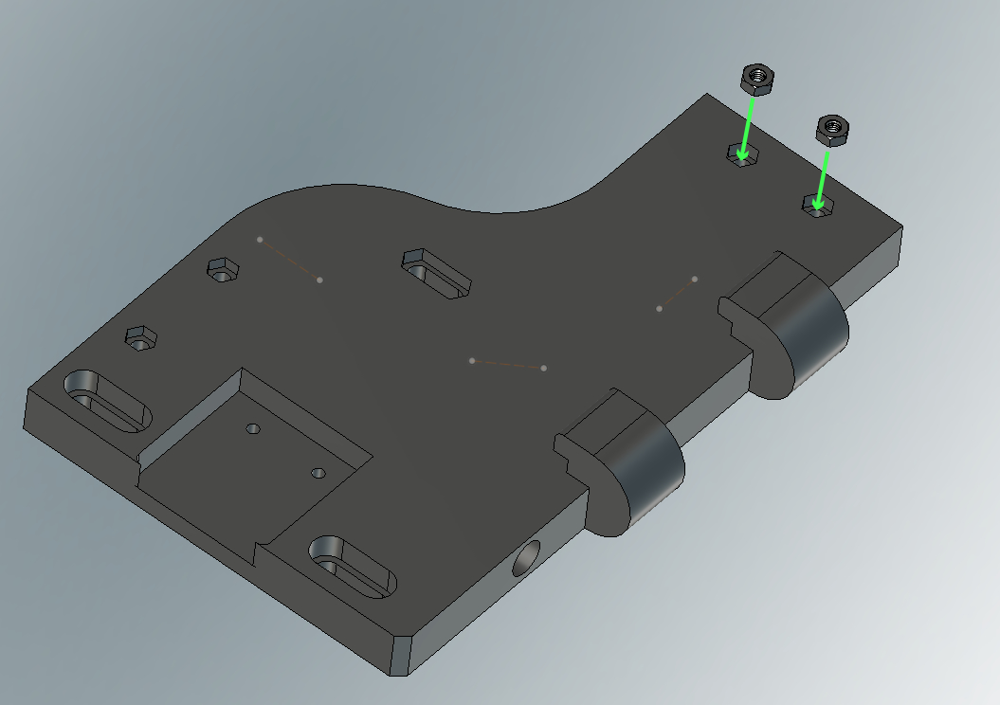
Step 2: Screw the two parts together
-
Get a 2.5mm Allen key ready.
-
Take the 3d printed part CR_1.stl.
-
Put the 2 screws M4x12 Countersunk Head and screw the two parts together (CR_2 & CR_1).
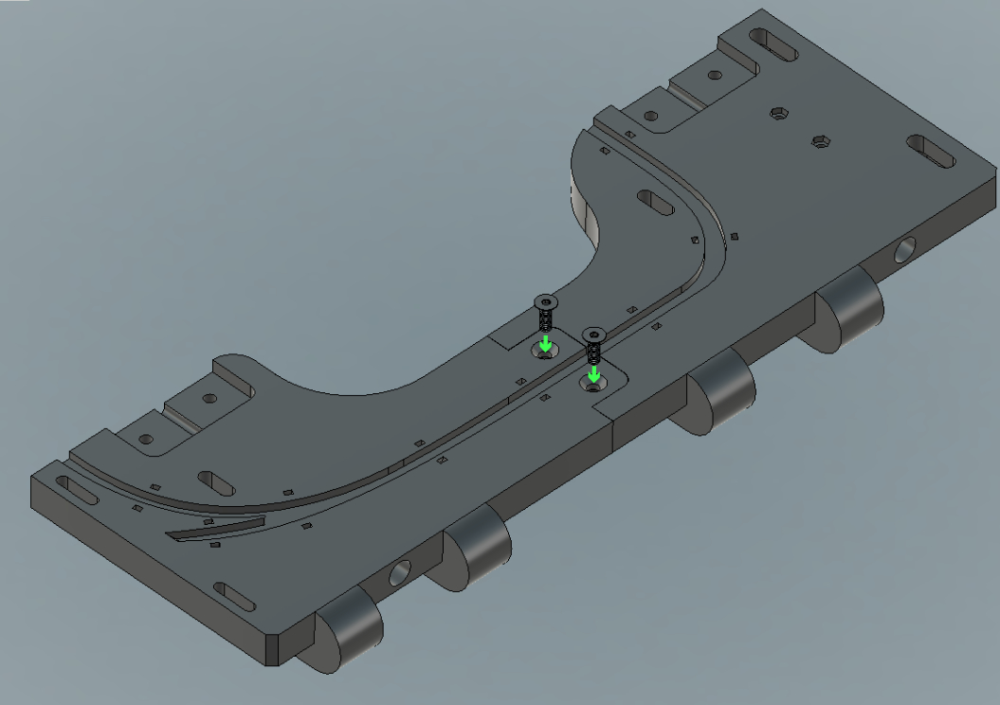
Step 3: Mirror repeat
- Take the CL_1.stl & CL_2.stl parts and screw them together with 2 screws M4x12 Countersunk Head and M4 Nuts (x2).
!! Tighten all screws for this two steps !! .
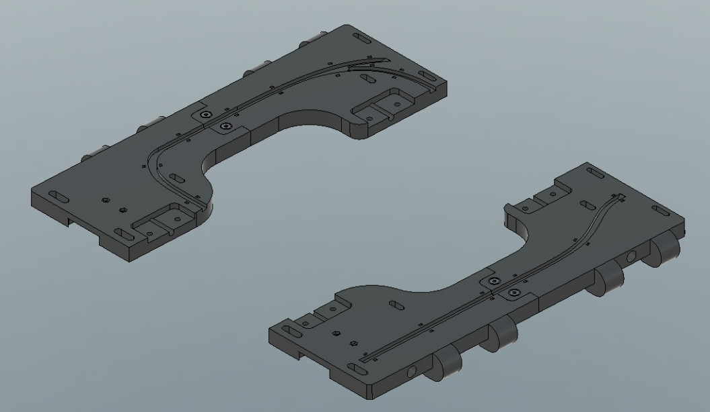
Step 4: Coupling
-
Take the two Acc.stl 3d printed parts.
-
Insert the 2 nuts M5 square into the holes in the Acc part.
-
Reapet the same proces for the second Acc part.
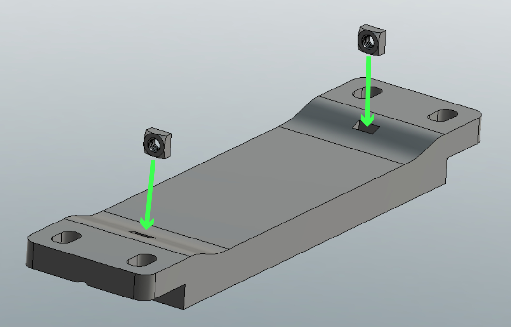
Step 5: Clamping screws
- Insert the 4 clamping screws, M5x120 and do not tighten the screws before placing the segregostat on the cytometer.
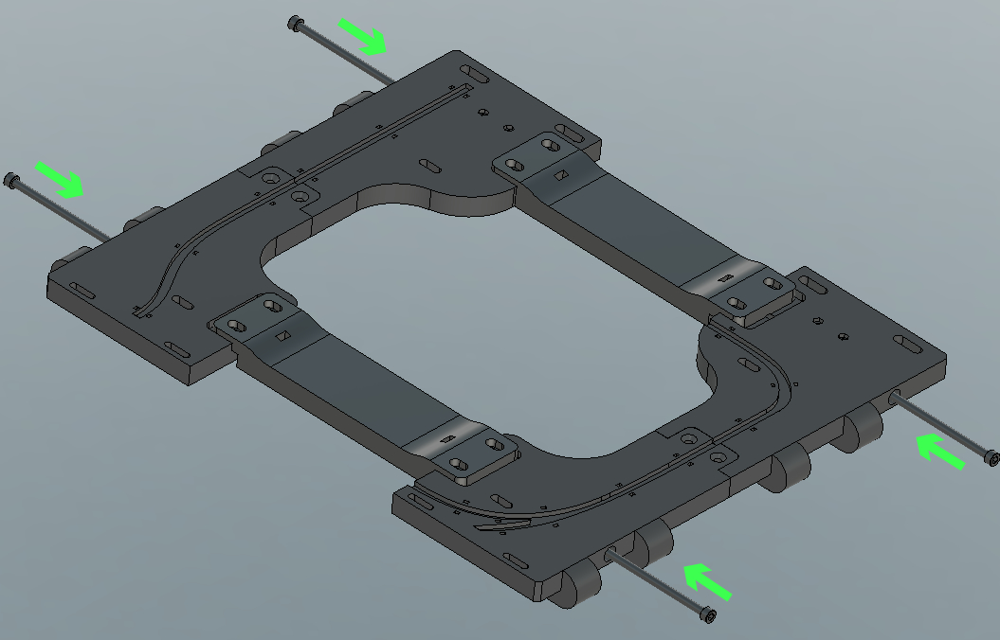
Step 6: More screws to hold it in place
-
First insert the M4 Nuts (x8) (Red arrows) from below.
-
Secondly, screw with M2x12 (x8) on top (Green arrows).
!! Do not tighten, the frame must be able to move !!
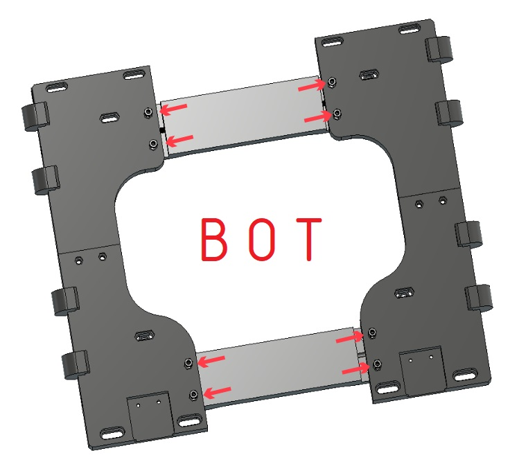
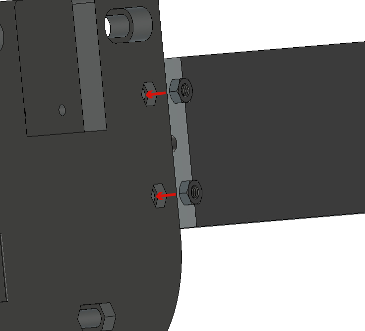
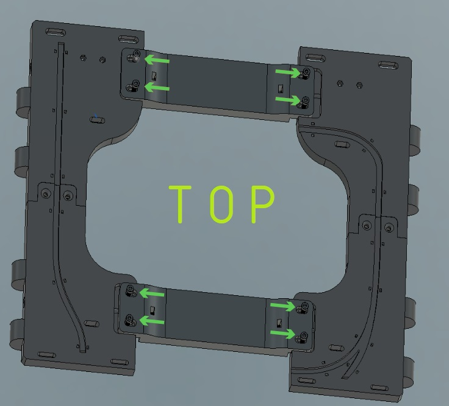
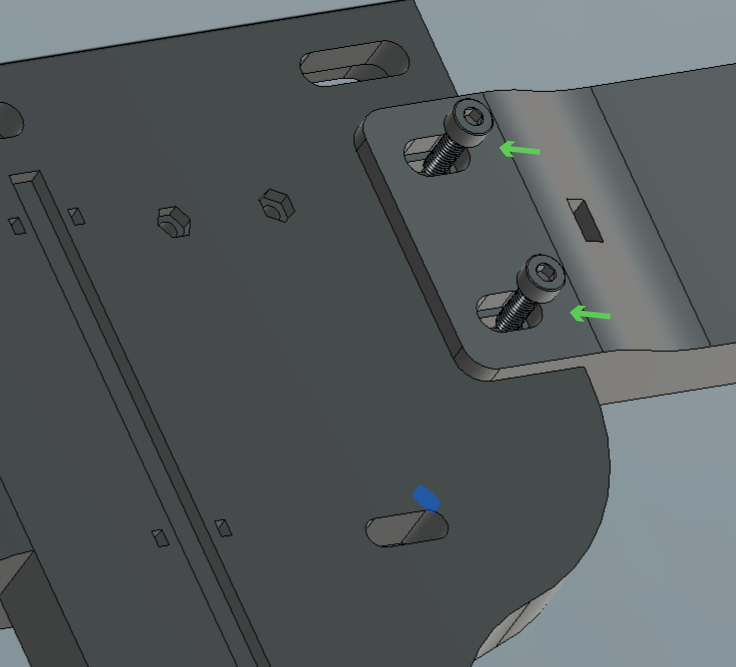
!! Do not tighten, the frame must be able to move !!
Step 7: Motherboard
- Get a 7 open end wrench ready.
- Put the 4 screws M5x25 HEX from the bottom of the Frame.
- Put 4 Spacer.stl (3d Printed Red arrow), the Motherboard, and then thighten with 4 x M4 Nuts (Green arrow) using the open end wrench.
! It's necessary to tighten without tightening completely !
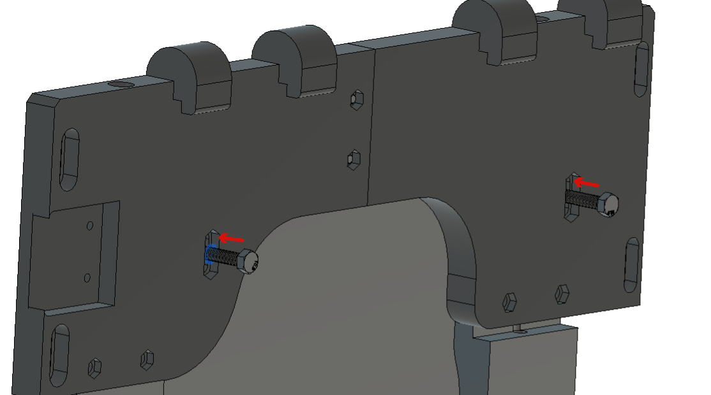
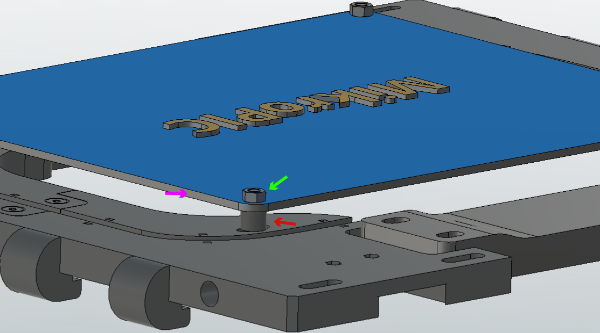
Step 8: Congratulations, the first part is done
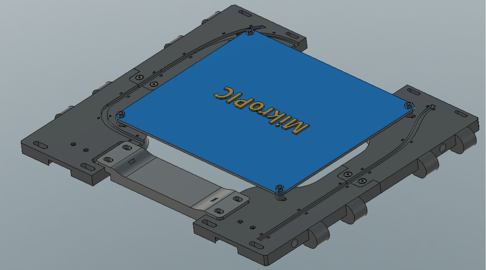
The frame must look like the picture.